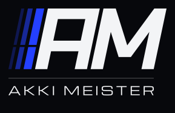

Upright futuristic typefaces, tracked to the mark's baseline width (foot of the first bar to the foot of the M), with a gap and a separator band between mark and name.
A · Typefaces (hairline separator)
01 Clash Grotesk 60002 Clash Display 600
03 Bai Jamjuree 60004 Panchang 60005 Unbounded 60006 Syne 70007 Cabinet Grotesk 70008 Satoshi 70009 General Sans 600

10 Michroma11 Tomorrow 60012 Space Grotesk 60013 Orbitron 70014 Chakra Petch 60015 Sora 600
B · Separators (Clash Grotesk, Clash Display, Bai Jamjuree)